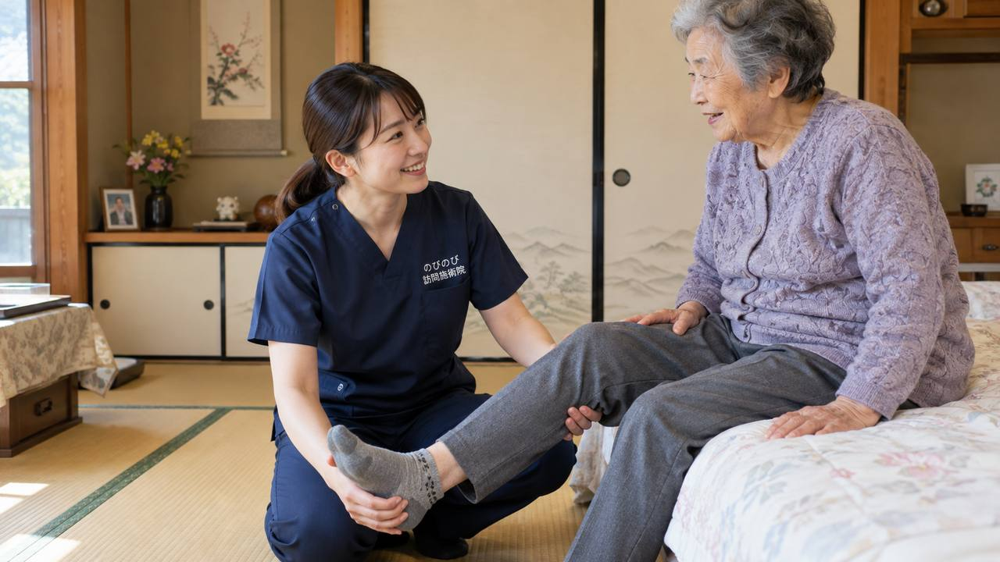

歩くと足の指の付け根、とくに中指と薬指のあいだがジンジン痛む、しびれる、焼けるように感じる。こうした症状の背景には、足裏や足の甲、ふくらはぎのこわばりが重なっていることがあります。原因の見きわめは整形外科などの医師の役割ですが、足元をゆるめて負担を減らす部分は、ご自宅にうかがう鍼灸・マッサージでお手伝いできます。
かいつまんで言うと、原因の見きわめは整形外科などの医師の役割ですが、足裏やふくらはぎのこわばりを和らげ、足への負担を減らすことは、訪問鍼灸マッサージがお手伝いできます。医師が施術を必要と認め通院がむずかしい状態なら、はり・きゅうの医療保険の対象になる場合があります。足に傷ができて治らない、感覚が急に鈍くなったといったときは、まず医療機関を受診してください。
足の指の付け根に起こる、痛みとしびれ
モートン病は、足の指の付け根を通る神経が、まわりの組織に圧迫されて、痛みやしびれ、焼けるような感覚が出るものです。とくに中指と薬指のあいだに多く、歩いたり、つま先立ちをしたり、幅のせまい靴をはいたりすると強くなりやすいのが特徴です。足のアーチの崩れや、合わない靴が関わることもあります。よく似た症状で対応が違うものもあるため、まずは整形外科などで診てもらいましょう。
こんなときは、先に医療機関へ
足に傷やただれができて治らない、足の感覚が急に鈍くなった、足が冷たく色が悪い、糖尿病があって足にトラブルがある。このようなときは、神経や血流の問題が疑われ、早めに診てもらうべき状態です。まず医療機関を受診してください。鍼灸は、こうした急を要するサインがないことを確かめたうえで、足の負担を和らげる面で力になれます。
鍼灸・手技でできること
神経そのものを治すことはできませんが、足の指の付け根の痛みには、足裏や足の甲、ふくらはぎの筋肉のこわばりが重なっていることがあります。はりやお灸、手技では、これらのこわばりを和らげ、めぐりをうながすケアを行います。足裏の張りがゆるむと、歩くときの負担が減り、痛みの感じ方が変わったと話される方もいます。感じ方には個人差があります。痛む部分を強く押すのではなく、まわりを整え、足全体の使い方を楽にしていく、という考え方でケアします。
靴と歩き方が、足の負担を左右する
モートン病では、靴と歩き方が症状に大きく関わります。つま先のせまい靴やかかとの高い靴は、足の指の付け根に負担を集めます。指先にゆとりのある、足に合った靴を選ぶことが大事になります。長く歩いて痛むときは、こまめに休むことも助けになります。医師から足底板（中敷き）をすすめられている場合は、それに従いましょう。うかがうたびに、足の状態に合わせた歩き方や靴選びの目安もお伝えします。
足のアーチと、体全体のバランス
足の指の付け根の痛みは、足のアーチの崩れや、体重のかかり方のかたよりと関わることがあります。片足をかばううちに、反対の足や膝、腰にまで負担が広がることもあります。うかがったときは、足裏だけでなく、ふくらはぎや足首、脚全体の状態を確かめ、負担のかたよりを和らげるよう整えます。足元を整えることは、歩きやすさだけでなく、転びにくさにもつながります。
歩くことを、あきらめないために
足の付け根が痛むと、歩くのがつらく、外出をひかえがちになります。動かないでいると脚の力が落ち、さらに歩きにくくなることもあります。原因の治療は医療機関にお任せしつつ、足裏やふくらはぎのこわばりを和らげ、足の負担を減らすことで、歩き続けられる足を支えられればと考えます。足のことでお悩みなら、まずはご相談ください。
外反母趾など、ほかの足の悩みとあわせて
足の指の付け根の痛みは、外反母趾や、足のアーチの崩れ、たこ・うおのめなど、ほかの足の悩みと重なっていることがよくあります。ひとつの不調をかばううちに、別のところに負担が移ることもあります。うかがったときは、痛む場所だけでなく、足の指の形、アーチ、皮ふの状態まで見て、足全体として負担が減るように整えます。爪や皮ふの処置が必要なものは医療機関をおすすめしつつ、足のこわばりを和らげる面で、歩きやすさを支えます。
気になる費用のこと
足の慢性的な痛み・しびれや、それにともなう歩きにくさについて、医師が必要と認め、通院がむずかしい状態であれば、はり・きゅうの医療保険で受けられる場合があります。1回の総額は3,950円で、自己負担は負担割合の分のみ。1割の方でおよそ395円が目安です。介護保険の支給限度額とは別の枠で使えます。対応エリア内であれば出張費は別にかからず、集金は月ごとにまとめて行い、その月の施術の内訳がわかる明細をお渡しします。負担割合ごとの金額とひと月の目安は、料金のページで計算しています。
痛みの出やすい場面を、知っておく
モートン病の痛みは、長く歩いたとき、つま先立ちをしたとき、せまい靴をはいたときなど、特定の場面で強まりやすいものです。どんなときに痛むかを知っておくと、その場面を避けたり、こまめに休んだりして、負担を減らせます。買い物や外出の際は、途中で腰かけて足を休める、痛くなる前に切り上げる、といった工夫も助けになります。うかがったときに、その方の生活で痛みが出やすい場面を一緒に整理し、負担の減らし方をお伝えします。
受けはじめるまでの流れ
はじめに、お電話などで、痛む場所や歩くときの様子、はいている靴、通院の状況をお聞かせください。整形外科などの診断をふまえ、足裏やふくらはぎへ鍼灸でできることをご説明します。痛む部分に強い刺激は加えず、まわりをやさしく和らげます。まずは一度、お話をお聞かせください。
よくある質問
モートン病でも保険で受けられますか？
足の慢性的な痛み・しびれについて医師が必要と認め、通院がむずかしければ、対象になる場合があります。まずは整形外科などで診てもらい、そのうえでご相談ください。同意書の手続きは当院が進めます。
痛いところに鍼を打つのですか？
痛む部分を強く刺激することはしません。足裏やふくらはぎなど、負担になっている筋肉をやさしく和らげることを中心にします。
靴を変えたほうがよいですか？
指先にゆとりのある足に合った靴が負担を減らします。中敷きなどを医師にすすめられている場合は続けてください。
糖尿病がありますが受けられますか？
受けられますが、足の傷や感覚の低下には特に注意が必要です。足にトラブルがあるときは、まず医療機関にご相談ください。
費用は1回いくらですか？
1回の総額は3,950円で、自己負担は負担割合の分のみです。1割の方でおよそ395円が目安になります。対応エリア内であれば出張費は別にかかりません。
どのあたりまで来てもらえますか？
豊中・吹田・茨木・箕面・摂津・池田、尼崎・伊丹、大阪市の淀川区・東淀川区・都島区・北区・旭区にうかがっています。